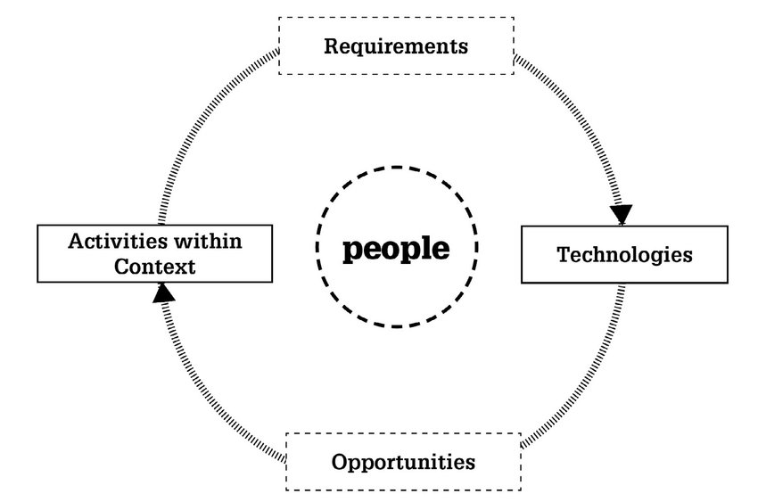
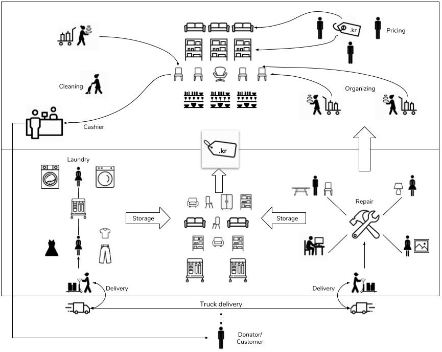
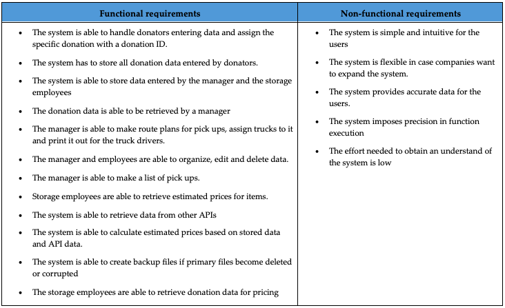
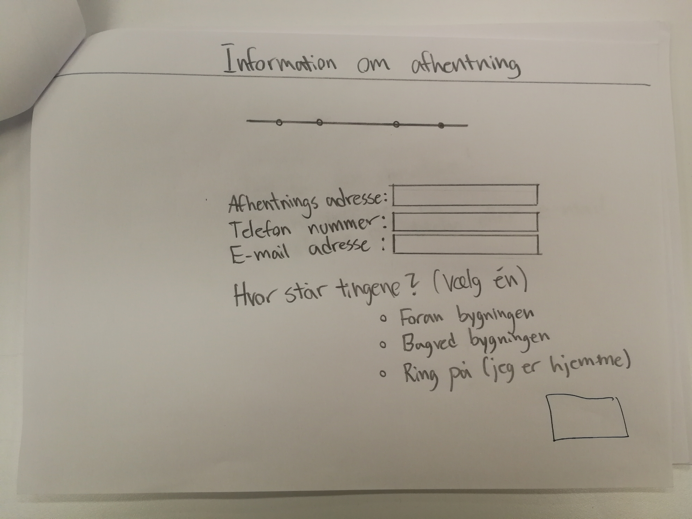
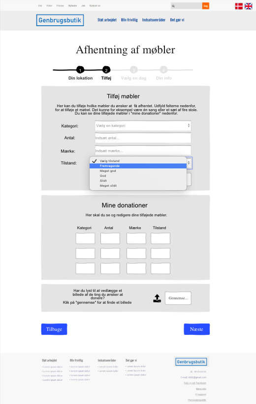

Focus
user-centered design, observation, semi-structured interviews, object-oriented programming
Problem area
Second-hand shops in Aalborg receive various donationation throughout the year.
Here, most of the people taking care of activities inside the shops are mostly elderly volunteers.
They carry out work mostly in an analog way. One of these activities implies that
the volunteers also have price the items according to their own judgement. This sometimes raises frustration because they
are having trouble figuring out the appropriate value of an item.
Approach
Second-hand buying has seen an increase in popularity in the past years, even though the phenomenon
is not new. While popularity seems to be increasing, the shops face challenges in the growing amount of people that
take part in the shared economy. These challenges consist in keeping up with administering demands, growing amounts of donated items,
and pricing accordingly to the market to maintain a healthy return.

Observations
The beginning of this project we have developed a PACT framework as a lens through which we structured our following research.
PACT provided us with an overview of the target group. The outcome of this analysis revealed a very diverse group of users which meant
there were inconsistencies and different factors that had to be accounted for in the design.
To better understand the people, activities, context and technologies currently used in second hand shops we built upon this initial framework by carrying out observations in the shops we partnered with. We used a moderately participatory observation seeing as it was difficult to only watch the volunteers at work without them engaging in interactions with us.
By using this method we wanted to observe this social setting as undisturbed as possible, without making the workers feel monitored. The observations were carried in 3 shops in Aalborg and the number of observers in each shop varied according to the size of the location. The observations took place at various hours throughout the day in order to get a holistic view over the activities carried out.
For the observations we followed an guiding sheet divided based on the PACT framework. By structuring the observation through the lens of the framework allowed for the data to be gathered in a clear manner, while discarding the gathering of unnecessary information.
To better understand the people, activities, context and technologies currently used in second hand shops we built upon this initial framework by carrying out observations in the shops we partnered with. We used a moderately participatory observation seeing as it was difficult to only watch the volunteers at work without them engaging in interactions with us.
By using this method we wanted to observe this social setting as undisturbed as possible, without making the workers feel monitored. The observations were carried in 3 shops in Aalborg and the number of observers in each shop varied according to the size of the location. The observations took place at various hours throughout the day in order to get a holistic view over the activities carried out.
For the observations we followed an guiding sheet divided based on the PACT framework. By structuring the observation through the lens of the framework allowed for the data to be gathered in a clear manner, while discarding the gathering of unnecessary information.
Interviews
Following the observations we conducted 7 semi-structured interviews with volunteers and one manager from
the shop in order to obtain deeper knowledge into context, activities and personal feelings that might have
escaped the initial data collections. Our reasoning behind choosing semi-structured interviews was that, at this point
in time, we did not have a thorough understanding of the situation, but we still had certain guiding themes that we wanted to follow.
This also left room for the volunteers to contribute with additional information that they seemed fit to include.
For the interview with the manager we created a separate interview guide which encompassed more complex matters seeing as the manager had a broad understanding of what happens in the shop. The interviews were conducted in Danish in order to make the informants as comfortable as possible and give them the ability to fully express themselves. The interviews were subsequently transcribed by following a standard previously agreed on and color coded by following the PACT framework.
For the interview with the manager we created a separate interview guide which encompassed more complex matters seeing as the manager had a broad understanding of what happens in the shop. The interviews were conducted in Danish in order to make the informants as comfortable as possible and give them the ability to fully express themselves. The interviews were subsequently transcribed by following a standard previously agreed on and color coded by following the PACT framework.
Research findings
From our observation session it was evident that most of the activities in the shops were very similar.
One particular finding was that the majority of the volunteers were elderly people, with a very small younger minority.
One of the activities that seems to be the most challenging was the pricing of items, which in all three shops was carried out by the volunteers.
In one of the shops there was also a pricing guide in the form of a poster with prices from a shop in another location to help the volunteers.
From this we concluded that the pricing activity carries with itself uncertainty and creates difficulties for the workers.
All the observed shops have ia room in common where the items are stored and evaluated before being displayed in the shop.
It was also clear that the shops did not rely on technology to carry out their work and that they used a computer only for handling payments
and browsing the internet for some pricing inspiration.
The interviews further validated some of this data. It was confirmed that most of the volunteers were elderly and even though most of them engage in multiple activities, each volunteer belongs to a particular section depending on the work needed in a day. It is also revealed that in terms of sorting items most shops have a similar way of doing it. From the interviews it has been made clear that there is one particular activity that is challenging: pricing of items .
The interviews further validated some of this data. It was confirmed that most of the volunteers were elderly and even though most of them engage in multiple activities, each volunteer belongs to a particular section depending on the work needed in a day. It is also revealed that in terms of sorting items most shops have a similar way of doing it. From the interviews it has been made clear that there is one particular activity that is challenging: pricing of items .
Design
One of the aspects that become a big part of design was the fact that the users of the system would be elderly people,
therefore the system should be designed in a way to accommodate this group specific needs.
Because of this we decided to follow an expert mindset in the design process.
Following our findings we have decided to proceed in the design process by focusing mainly on the most evident challenge faced by the volunteers, pricing, and additionally aim to offer them a solution that also supports their other activities. Because the project was in an incipient phase we decided on focusing on one category, furniture, as this was the most clear task they undertook and it consisted of larger items, where appropriate pricing could bring the shop more value. We also chose to include a feature for registering donations in order to save time for both the donators and the shop, and provide the managers with a more clear overview over the activities that were taking place. We decided on creating the first version by focusing on the bigger shop that we collaborated with. The reasoning behind this was that if we can accommodate the needs of administering a bigger system we can subsequently tailor the solution for the other second-hand shops.
We started the development of the solution by first creating a rich picture that would encompass the flow of the work carried out in the shop. We proceeded to reiterate on the PACT analysis following the data gathering process, which offered us more insight into the case. This further helped us in formulating a definition for our system and prioritizing requirements. As research showed we were dealing with a very specific group so the design of the system should be simple enough and accommodate possible visual and physical difficulties.
Following our findings we have decided to proceed in the design process by focusing mainly on the most evident challenge faced by the volunteers, pricing, and additionally aim to offer them a solution that also supports their other activities. Because the project was in an incipient phase we decided on focusing on one category, furniture, as this was the most clear task they undertook and it consisted of larger items, where appropriate pricing could bring the shop more value. We also chose to include a feature for registering donations in order to save time for both the donators and the shop, and provide the managers with a more clear overview over the activities that were taking place. We decided on creating the first version by focusing on the bigger shop that we collaborated with. The reasoning behind this was that if we can accommodate the needs of administering a bigger system we can subsequently tailor the solution for the other second-hand shops.
We started the development of the solution by first creating a rich picture that would encompass the flow of the work carried out in the shop. We proceeded to reiterate on the PACT analysis following the data gathering process, which offered us more insight into the case. This further helped us in formulating a definition for our system and prioritizing requirements. As research showed we were dealing with a very specific group so the design of the system should be simple enough and accommodate possible visual and physical difficulties.

A table of functional and non-functional requirements was created in order to get an overview on what were our
goals which were prioritized using Benyon’s (2014, p.140) MoSCoW rules. After modelling and structuring the system architecture using
classes and events, we created use cases for the application domain with the aim of encompassing the possible interactions the users will have with
the system.

For the first iteration of the design we decided to hold an initial prototyping session with the purpose of generating incipient design ideas.
The process started with a rapid prototyping phase where each group member created a lo-fi prototype to avoid influencing each other.
Seeing as we were designing the system for elders we took into account design guidelines from our literature review on this theme.
We discussed and evaluated the prototypes and we decided on what elements should the lo-fi prototype contain.
This prototype was evaluated with two managers from the collaborator second-hand shop. This evaluation revealed some gaps in knowledge in regards to who was handling certain activities in the shop. The managers were positive towards the design of the prototype, especially in regards to the donators system that would lift some work from the volunteers. They also saw a good feature in asking the donators for fixed information as this would make it clear what it is needed from them. Only some minor functions were deemed unnecessary or deficient for the users.
The evaluation also unveiled clear information on what is needed for administering the furniture items. Although the participants liked the overall idea, they were unsure whether the part of the system made for the volunteers was needed. They did not consider the volunteers as having trouble with the pricing, even though through our research there were multiple complaints about this. There was also reluctance in introducing the system to the volunteers seeing as everyone will have to learn to use it.
This prototype was evaluated with two managers from the collaborator second-hand shop. This evaluation revealed some gaps in knowledge in regards to who was handling certain activities in the shop. The managers were positive towards the design of the prototype, especially in regards to the donators system that would lift some work from the volunteers. They also saw a good feature in asking the donators for fixed information as this would make it clear what it is needed from them. Only some minor functions were deemed unnecessary or deficient for the users.
The evaluation also unveiled clear information on what is needed for administering the furniture items. Although the participants liked the overall idea, they were unsure whether the part of the system made for the volunteers was needed. They did not consider the volunteers as having trouble with the pricing, even though through our research there were multiple complaints about this. There was also reluctance in introducing the system to the volunteers seeing as everyone will have to learn to use it.

Our measure for this was designing the system as an optional tool that the volunteers can use, therefore not creating
any obligation on their side, but rather give them an alternative in case they needed guidance. Moving on after the evaluation we considered
Gestalt principles in order to ensure a successful interaction between the users and the system in terms of the interface.
One of the particularities in this activity was making the labels on all the fields clear and that the size of the text big enough
so that it was easily understandable. We carried out a heuristic evaluation following Moller and Nielsen's heuristics.
This was the final evaluation on the prototype before diving into the programming of the system. This meant that the final
user testing was carried out on an actual version of the system rather than a prototype, due to the short deadline of the project.

Development
The development of the system was done in Java 8. It was created as close as possible to the prototype, but due to the technical experience
of the team members, seeing as this project took place in the first year of our master’s studies, the implementation was not exactly matching the
prototype. For the evaluation of this initial iteration of the system we took into account both UI and UX measures.
We conducted two sets of tests with the users where they had to complete several tasks by using the system. This was followed by a
short interview in order to get a holistic view of the interaction. We carried out 12 tests, 10 for the donator section of the system
and the remaining for the manager section.
The results indicated that the system was simple and intuitive, the mention of resemblance to a Danish website for buying and selling
used item being brought up, which was in accordance with out intention. The simplicity and intuitiveness also showed when we analyzed the
time and clicks needed to complete the task. There were some misinterpretations in the labeling which indicated they were not clear enough
and needed modifications. The evaluation showed there were still some issues regarding the navigation and feedback from the system.
Constraints
The main difficulty we encountered was the high amount of work needed to be done and the short time span
in which the project should be finalized. This limited the refinement of the prototype and allowed for a very small window for programming.
Throughout programming, seeing as all members in the team wished to grasp some development concepts but had various levels of experience,
slowed the process. On the other hand this was a choice we made in order to have all team members gain knowledge in this area, which weighted
more at that point in time seeing as the ultimate goal was learning.
Outcome
Our results show that the overall concept of the system was feasible and points towards additional iterations on
the implementation of the technical solution in order to become a fully operating tool for the shops.
We conducted two sets of tests with the users where they had to complete several tasks by using the system. This was followed by a short interview in order to get a holistic view of the interaction. We carried out 12 tests, 10 for the donator section of the system and the remaining for the manager section.
The results indicated that the system was simple and intuitive, the mention of resemblance to a Danish website for buying and selling used item being brought up, which was in accordance with out intention. The simplicity and intuitiveness also showed when we analyzed the time and clicks needed to complete the task. There were some misinterpretations in the labeling which indicated they were not clear enough and needed modifications. The evaluation showed there were still some issues regarding the navigation and feedback from the system.